StyleGuide
Расскажем о том, как работает визуальный стиль FlopSpace
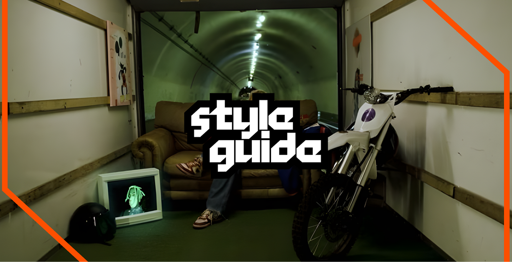
Tone of Voice
Миссия
Предпринимателям нет необходимости совершать ошибки, лучше учиться на большом количестве чужих
Суть сервиса
База провалившихся кейсов с разборами-статьями ключевых ошибок
Тон коммуникации
Наш бренд общается с ЦА путем высмеивания серьезности индустрии бизнеса и легких результатов. Мы стремимся показать реальную сторону вопроса, подшучивая над темами, которые только кажутся важными на этом пути
Правила работы с логотипом
Знак демонстрирует коробку, в которую мы собираем стартапы и их опыт. Скошенные углы — это демонстрация незаконченности, проблем в них.
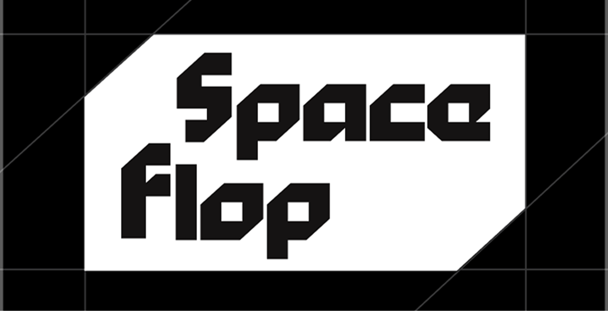
Охранные поля обозначаются сложенными в квадрат двумя прямоугольными треугольниками от скосов.

Варианты использования
Версия знака из 2х букв используется в наружной рекламе где уже текстом упомянуто название медиа. Когда мы абстрагируемся и коммуникация идет через графику без подписей — полноразмерный логотип с названием
МОЖНО
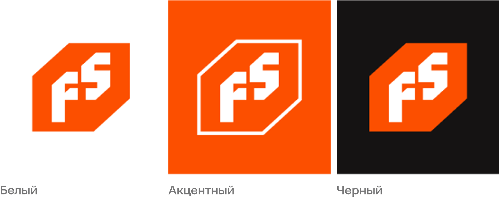
Цвета
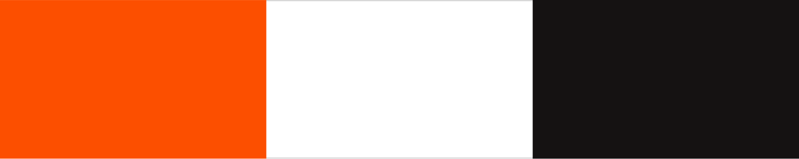
Цветовые пары
Мы сочетаем только акцентный и нейтральный (например: оранжевый и черный, синий и белый)
МОЖНО

Типографика
Акцеденция

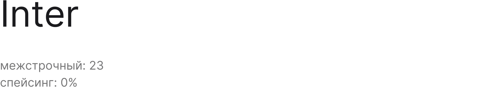

Композиция
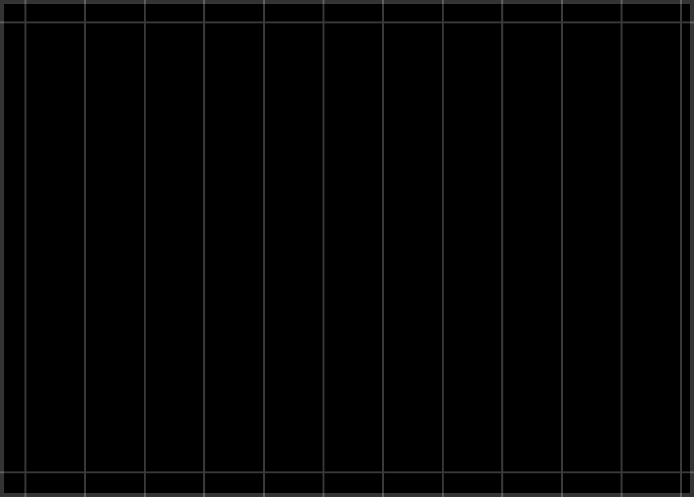
Сетка выстроена по стандарту 12 колонок, но при этом в ней отсутствуют margin’ы между колоннами. Данное решение помогает делать графику более плотной и по образу паттерного подхода
Также выстроены внешние линии, которые создают save-зону ширинной в 1/3 колонки, она не влияет на расположение графики, а является ограничением для типографики
Горизонтальные композиционные схемы
Мы сочетаем только акцентный и нейтральный (например: оранжевый и черный, синий и белый)
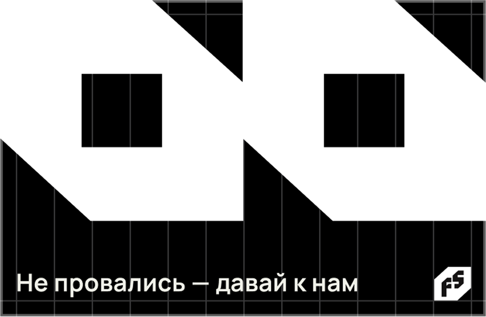
Сетка выстроена по стандарту 12 колонок, но при этом в ней отсутствуют margin’ы между колоннами. Данное решение помогает делать графику более плотной и по образу паттерного подхода

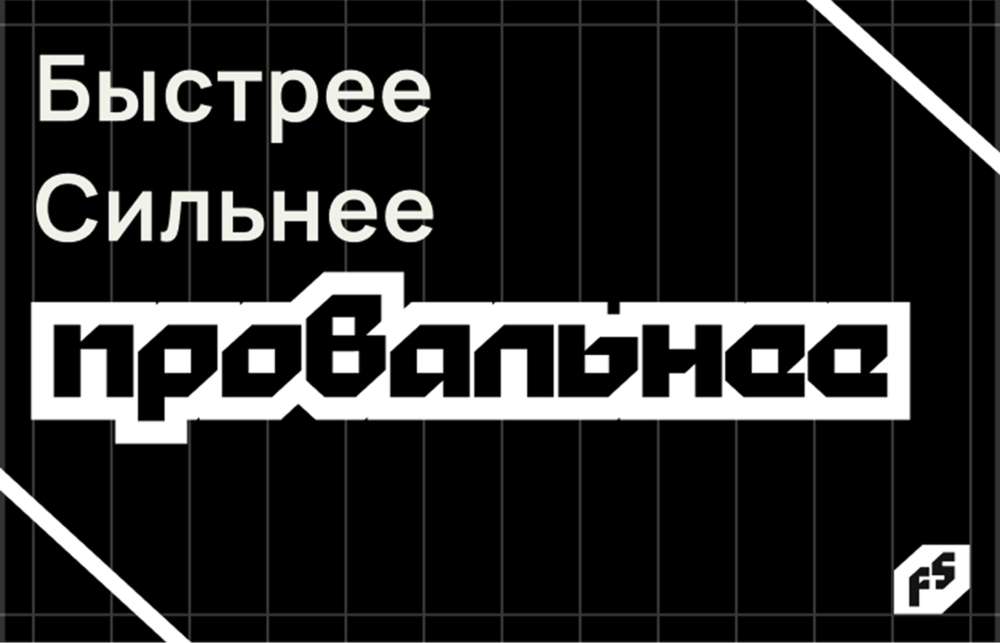

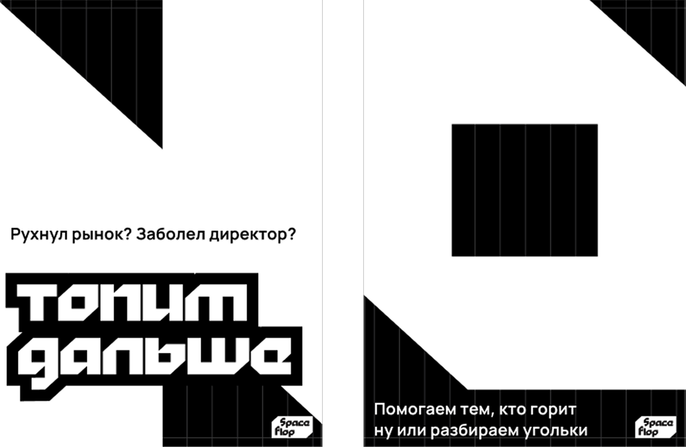
Графика
Крайне важным элементом графики является система наклеек-акцентов. Акцедентный шрифт отрегулирован до соприкосновения букв с последующим образованием прямоугольного ровного контура с дефектами.

Блочная графика
Здесь представленна система из 3х вариантов:
— Полная коробка
— Коробка с дефектом
— Акцедентный шрифт под скейлом

Фотографии
Оранжевый - холодные
Принцип заключается в том, что чтобы не терять контаста мы подбираем фотографии в противоположных тонах нашему акценту, тем самым сохраняя баланс

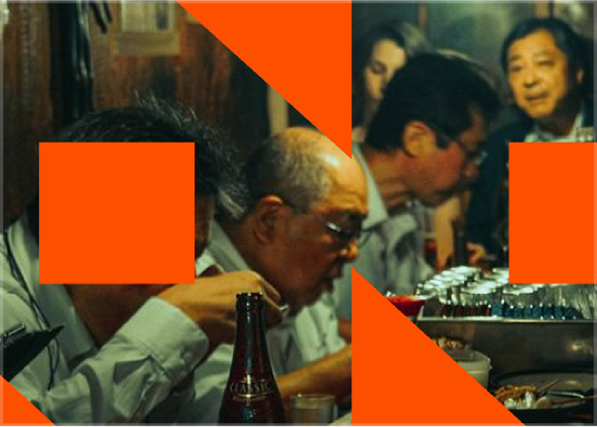
Графика в социальных сетях

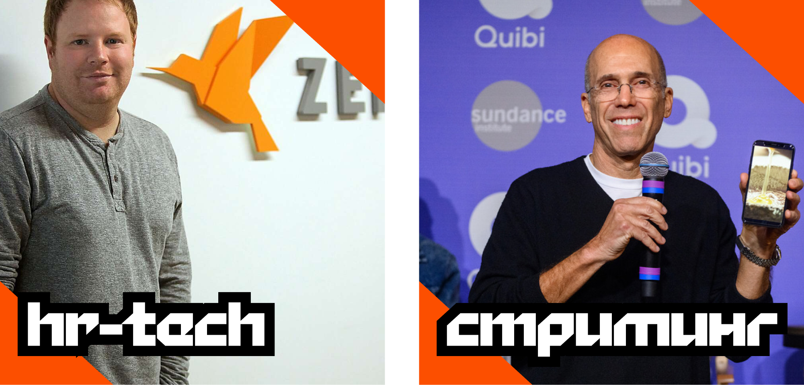